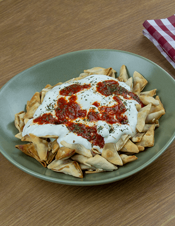

MANTI

Description
If you ever wished for dumplings that are shaped like boats with the meat visible inside, try making these Turkish dumplings called manti. You can use either ground beef or ground lamb and they are traditionally served with either plain yogurt or a yogurt-based sauce.
Ingredients
For the Dough:
- 1 ⅔ cups all-purpose flour, or more as needed
- 1 large egg
- 1 ½ teaspoons olive oil
- ½ teaspoon kosher salt
- 2 tablespoons water, or as needed
For the Filling:
- ½ pound ground beef
- ¼ cup finely diced onion
- 2 tablespoons minced fresh parsley
- 1 teaspoon smoked paprika
- 1 teaspoon kosher salt
- ½ teaspoon freshly ground black pepper
- 1 pinch cayenne pepper
For the Broth:
- 1 tablespoon olive oil
- 1 clove crushed garlic
- ½ cup tomato sauce
- 2 cups chicken or beef broth
- salt and freshly ground black pepper to taste
- cayenne pepper to taste
Steps
- Combine 3/4 of the flour, egg, olive oil, salt, and water in a bowl. Mix with a fork, just like when making a pasta dough, until ingredients just come together. Continue mixing everything with your hands into a shaggy dough. Turn out mixture onto a floured surface and keep kneading until dough is nice and smooth. Add additional flour as needed. Cover and allow dough to rest on the counter for 30 minutes
- Combine ground beef, onion, parsley, smoked paprika, kosher salt, pepper, and Armenian cayenne in a bowl. Mix with a fork at first, then use your hands until filling is well combined. Cover and chill in the refrigerator.
- Preheat the oven to 400 degrees C (200 degrees C). Grease a cast-iron skillet with olive oil.
- Lightly flour a work surface and set the dough on top. Cut dough in half and roll out one half as thin as possible into a large rectangle. Cut dough first into strips, then into 20 small rectangles, about 1.5 x 1.75 inches each. Reserve dough scraps in case there is left over filling to make extra manti. Repeat with second half.
- Use a teaspoon to portion out the filling, about 1/2 to 1 teaspoon per manti, and set into the middle of each dough rectangle.
- Moisten the outer, shorter edges of each rectangle with a little bit of water on your fingertips, pick up a rectangle, and trap the filling inside by pinching both ends of the dough together, creating the classic "little man in the boat" design. Press dumpling together so manti will sit up straight in the skillet, making sure the dough at the ends is as thin as it is around the filling.
- Set manti inside the prepared skillet in such a way that there is still a little room between the dumplings as the dough will expand to about twice its size during cooking.
- Bake in the preheated oven on the center rack for 40 minutes.
- Meanwhile, heat olive oil in a pot over medium-high heat and cook garlic until fragrant, 20 to 30 seconds. Add tomato sauce and stir quickly. Add chicken broth and season with salt, pepper, and cayenne.
- Bring tomato broth to a simmer and turn off the heat.
- Ladle tomato broth over the manti and return to the oven for 15 more minutes.